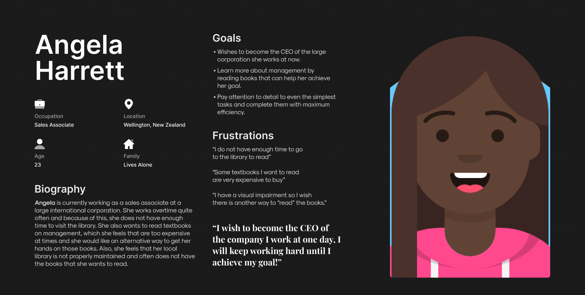

Defining the Users of the Application and it's Scope
The main question is why would anyone use this application? Many Paperback Books and E-Books are relatively cheap nowadays and many consider books an investment since they do not perish. According to a study from the Pew Research Center on American reading habits, the number of books an average person reads a year is 12, although this number is inflated due to the number of avid readers who drive up the average.
The goal of this application is just to give users an opportunity to read books without actually having to buy it. They can borrow the book for upto 60 days and if they complete it by then, then great! They just read a book for free. If they did not finish the book by 60 days, then they have to buy it but by then, they will have an idea if this is a book they want to continue reading.
Meet the users of BookNest
Based on the previous section, I have illustrated 2 prospective user personas for BookNest. Due to budget constraints, these user personas are an imagination and only a depiction of a few possible users of BookNest.


Illustrating the User Journey of Tyrone Hayes - Using the BookNest app to borrow a book for free.
To get a better understanding about how the users would traverse through the application, I have created a user journey of how Tyrone Hayes would navigate through the application and accomplish his goal of borrowing a book to read.
Important Details to keep in mind before designing the Wireframes
Creating a Hypothesis Statement based on the User Persona of Tyrone Hayes
If Tyrone downloads the app, he will have achieved his aim of finding an alternative way of reading books and arguably, a more reliable way than the local library. He will also be able to resolve his space issues in his dorm room and also, will not have to spend any money to read the books. We believe that easy access to the books will increase how frequently he uses the application which will most certainly be helpful for him to achieve his goal for becoming a successful author one day.
User Storyboards
Before I create the wireframes of the application, I have created a storyboard to visualise how Tyrone would navigate the application in order to borrow a book. I created this storyboard to visualise the organisation of screens in the wireframing phase.
Wireframes - Based on Tyrone Hayes' User Journey
I have created a low-fidelity prototype for the application. For this Low-Fidelity Prototype, I focused on the main user journey of the application which covers creating an account, checking "Your Library" which stores all the books you have rented and bought, using the search function to look for a book you want to read, then reading the description of the book and then renting it and finally, see it be added to "Your Library". This will be the most used functionality in the application hence, I wanted to prototype this first to see how smooth the user journey I created would be.
UX Research Study Script
To gain a better understanding about how the users feel about BookNest's application and its main functionality of enabling users to borrow books for free, I have created a UX Research Script. The script contains information about the desired participant groups, the tasks that the users will have to do on BookNest's application, the follow-up questions that will be asked regarding the tasks. After the users complete this task, we will get a much better idea about what features are easy to use, what features need to improve and more importantly, how to improve the features that the users have faced issues with.
My comments on the High-Fidelity Prototype
As for suggesstions to improve the application, I would improve how the Book Information Page looks as there is a lot of possible clicking options. The Back button, the Heart, Start Reading, Play AudioBook, Add Rating, Read Summary and Buy the Book. That is 7 navigation options from one single page and there is a possibility that a few users get overwhelmed by the sheer number of options.
Additionally in the Search Page, none of the books have the Title and Name available on the front page so this might make it difficult for Screen Reading Software. Although, I did carefully choose the book covers to be quickly identifiable.
As for the Visual Design of the application, I am quite happy with the direction I decided to go. I really like the Serif Font of choice and I like the light colour scheme of the application. One thing I would improve is the animation that occurs when navigation between pages. If this project is to come to life, I would suggest a similar animation to how we flip pages in a book. I thought about it and how it would really fit the theme but I was unable to implement it due to the limitations of MarvelApp.
Usability Test Results
Test Procedure
To get a better understanding about how easy or difficult the main user flow of this application is to complete, I created an unmoderated usability test using MarvelApp; The goal of the Usability Test is to check how much time users take to get to search, search for a book to borrow, borrow it and go to the book information page which has the "Start Reading" button.
Participant Demographic Details
5 participants were invited to take the usability test, aged between 18 and 48. Out of these 6 participants, 2 of these participants did not have a strong understanding of the English Language and 1 participant was new to technology.
These participants were chosen based on the UX Research Study Script, mainly a user who is not fluent in English as well as a user who is new to technology to check if the application can be used by the Next Billion Users.
Summarising The Test Result
Of the 6 participants who took the Usability Test, all of them were able to complete the User Flow succesfully. The average time was 41 seconds, the lowest time being 34 Seconds and the highest time being 87 Seconds. As for the average mistaps (Mistaps here is defined as any clicks that does progress the users into the next stage of the user flow), the participants had an mistap of 12% across all screens.
Conclusion
As for the test results, I am happy that all participants were able to complete the user flow, even the one who was new to technology. Clearly, six participants are a very small number to test out the application and to get a more accurate idea of how users perceive the user flow, a larger sample size is required and additionally, conduct follow-up interviews to receive proper feedback.
My takeaways from this design process
This was actually the very first UX Project I ever worked on and this iteration is basically just a redesign of the original. Here is a link to the old version of this project:
I took a completely different UI approach from the RideOn project which makes me happy as I am confident that I am able to design intuitive UI for applications with different goals. Although a few pages are similar to RideOn such as the Onboarding or the Sign-In page, it could be thought of as how the application would look if the same company designed both BookNest and RideOn.
Additionally, the navigation options for this project was not an hamburger menu, as here, all the features are equally important and nothing could be hidden behind a menu without hindering the User Experience while in RideOn, the other features such as Ride History could be hidden from User View without affecting the experience.
In the High-Fidelity Prototype, I focused on the main goal of the application which aims to allow people to read books without having to buy it. When it comes to these projects, I usually only keep my eyes set on the main user journey of the app and how to make it as simple as possible while also making it visually appealing for the users. While some people might consider it lazy to not include all the features mentioned in the prototyping stage itself, I consider it more efficient.
As I am constantly trying to be a better designer, feedback is always appreciated so please do not hesitate to contact me. Thank You for reading my project, I hope you liked it! :)